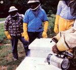
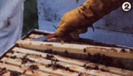
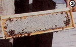
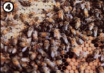
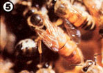
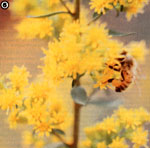
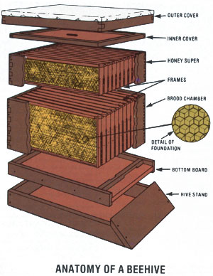

The sweetest of all harvests goes to those folks who keep honeybees, and the time to prepare to undertake such a venture is now. But first you should understand...
The world of men is always uncertain, seldom inspiring, often a source of discouragement and dismay. But the keeper of bees, like anyone who has welded his life to the cycles and patterns of nature, can always turn to his tiny creatures and his craft ....
Even as a boy, driven by the passions and impulses that make youth so tumultuous and blind and filled with folly, I noted [the] serenity in beekeepers. From time to time I would see one sitting out in his battered chair, basking in the peace and sweetness of the setting . . . while around him, in spring, the cherries bloomed and the bees hummed, just as they had for a million springs gone by, and as they will for more millions to come.
Richard Taylor
The Joys of Beekeeping
The picture of a serene individual calmly tending to the "little golden folk" in his or her beehive presents a rare and heartwarming example of how humans can sometimes work in cooperation with the natural world. Yet although experienced beekeepers may lyrically praise the sweetness of both their labors and their harvests, most people find the idea of actually caretaking a hive to be quite intimidating.
Folks are often frightened by the mere thought of tending to a colony of 30,000 to 80.000 stinger-laden and venom-carrying flying insects. And individuals who do feel inclined to learn this seemingly mysterious art find that many beekeeping how-to guides plunge into such bewildering barrages of complicated explanations that the books actually add to the readers' muddle ment.
Well, in spite of the fact that bees do have stingers, that many texts do seem-especially at first -to be almost unintelligible, and that no beginner can become an expert (and sagaciously serene) beekeeper in a single honey season . . . it is quite possible for an interested novice to learn to work bees and harvest honey.
As long as there are nectar- and pollen-bearing flowers in your area, you can become a hobbyist beekeeper and successfully manage one or more hives to produce all the fresh unadulterated honey you (and your friends!) can use. This fact holds true even if you live in the middle of a large city, as many urban beekeepers keep hives of honeymakers on apartment house roofs or in attics! (Before doing so, however, city dwellers should check their local ordinances.)
This article, then, will introduce you to the field of beekeeping. It won't pretend to reveal all you need to know to undertake backyard apiculture (much of that information can be had solely through study and experience) . . . but it should give you a feel for what's entailed in the endeavor and, perhaps, a desire to try your hand at tending bees.
However, getting stung is not a disaster. Sure, it hurts . . . but most beekeepers soon build up an immunity to the venom itself, and eventually suffer no aftereffects from such incidents. (A small minority of people, though, are especially allergic to bee stings . . . and their sensitivity may increase with time. Such folks should not, of course, even attempt to keep bees.)
In addition, there's a "secret" technique you can use to greatly reduce the amount of venom you absorb from those occasional stings. Simply use a fingernail (or some other thin-edged object) to scrape the "bee needle" out immediately . . . otherwise, the stinger's venom sack will continue to pump poison into your flesh for a minute or more. (Don't try to grab the stinger with your fingers-as so many people do-or you'll actually squeeze even more venom into your system.)
That beekeeper's trick will greatly reduce the damage inflicted by stings . . . but, of course, your goal will be to get stung as little as possible while tending hives. And the following tips should greatly reduce the number of "injections" you receive.
[1] Wear a snug ("beetight") veil and light- colored clothing. (White coveralls are excellent for beekeeping ... blue jeans are poor.) Eliminate any "crawlin" spaces between your garments and skin by tucking your pants legs into your socks and, possibly, wrapping rubber bands around your shirt sleeves. Do not wear wool. And consider not wearing protective gloves. (During the first few months, you may feel more comfortable if you do don the hand shields, but eventually you'll probably find that it's easier to work a hive, without crushing bees, when you're barehanded.)
[2] Do not wear clothes that have previously received stings. Bees release a banana-scented pheromone when they strike . . . to alert their comrades to the threat and summon other bees to sting the same area. So wearing garments that are still scented with that alarm odor is literally asking to be stung.
[3] Always use a smoker . The portable bellows/firebox combination (a standard piece of beekeeping equipment) enables you to puff plumes of smoke into the beehive. And for some reason-perhaps because the nectar gatherers believe they're getting ready to flee from a forest fire-bees engorge themselves with honey whenever they smell smoke... and become much less aggressive toward intruders. (A smoker is also useful for temporarily covering up the scent of a bee's alarm pheromone if you do get stung.)
[4] Whenever possible, visit the bees on a warm, sunny, windless day when plenty of nectar-bearing flowers are in bloom (or, as beekeepers say, when there's a honey flow ). On such occasions many of the insects will be out working in the fields . . . and the stay-at-homes will be so busy with their own labors that they'll hardly notice your presence.
[5] Don't block the hive entrance with your body. Tend the bee house from the side or back.
[6] Try to make all your movements calm, evenly paced, and efficiently purposeful. Don't alarm the insects by moving jerkily or hastily . . . or try their patience by taking more time than you should. (Of course, such poise may not come naturally at first. Keep trying, and your skills and demeanor will soon improve. And, if at all possible, get some experience working with other beekeepers . . . a lot of their self-assurance will rub off on you .)
Before you can begin beekeeping, you need to know a bit about the equipment and community you'll be working with. The modern beehive was devised-in 1851-by the Reverend L.L. Langstroth. His design incorporated two vital features that are standard today: movable, interchangeable frames and uniform "bee space".
The fact that all the interior parts can be easily taken out and moved about is-in Langstroth's invention-what makes precise and nondestructive manipulation of the hive possible. And since all the internal pieces of equipment are separated by 5/16" spaces (the size of passageway that bees naturally prefer), the insects usually won't be tempted to close off their "halls" by sticking the hive parts together with extra comb or bee glue (propolis).
The basic parts of the bees' home are a hive stand, a bottom board , inner and outer top covers , and-most important of all-open boxes, or supers, that make up the body of the hive. Inside every one of the bee-housing boxes are eight to ten frames (or racks ), and each of these removable rectangles contains a thin sheet of beeswax imprinted with hexagons the size of a worker bee cell. Such sheets of foundation give the bees ordered starting points for drawing out either egg or honey cells.
The main hive body, or brood chamber (sometimes called a deep super ) is 9-5/8" high and used to house the queen and her eggs ( brood ). Many beekeepers like to keep two brood chambers on each hive.
The shorter boxes, or shallow supers (most frequently referred to simply as supers ), are only 5-3/4" tall. They are stacked on top of the brood chamber(s) and used primarily for storing honey.
The members of a hive colony are one queen bee , thousands upon thousands of worker bees, and a random (but, in the most productive hives, small) number of drone bees. The queen, the most longlived member of the colony, resembles a worker bee with an enlarged abdomen. After her few youthful mating flights, she spends the rest of her life (as long as seven years) in the hive, performing one function: laying eggs . . . to the tune of more than 1,500 a day during the peak of each season!
The worker bees are all females that lack fully developed reproductive organs. These multitudes of industrious insects run the hive . . . feed and clean up after the queen . . . gather honey, pollen, and water . . . keep the internal temperature of the hive constant (they can both cool and heat their enclosed environment!) . . . feed the larvae . . . and build all the honey and brood comb! (No wonder they're called workers!)
In contrast, the drones--very large, very indolent male bees-never lift an antenna to help out around the place, but simply eat honey (that's why you don't want too many of them in your hive) while waiting for an opportunity to mate with a young queen (a fatal-but, one must hope fulfilling-experience).
In order to begin raising bees, you'll have to get some equipment. The two biggest U.S. suppliers of beekeeping gear are Dadant & Sons. Inc. (Dept. TMEN, Hamilton, Illinois 62341) and the A.I. Root Co. (Dept. TMEN, P.O. Box 706. Medina, Ohio 44256). Both can provide excellent equipment, including beginner's kits that consist of everything you need to get started-except bees and honey supers-and sell for around $75. (Some less expensive beekeeping supply companies run ads in the magazines listed in this article's sidebar.)
When it's time to obtain your "winged livestock", you can either [1] mail-order a nucleus of "package bees", [2] buy a working hive from a local beekeeper, or [3] catch a wild swarm.
Catching a swarm isn't really as difficult as you might imagine: The tight, homeless clusters of bees-usually seen hanging from tree limbs, posts, or shrubs-tend to be remarkably mild-mannered. Still, if you've never handled bees before (or if you don't want to depend on the chance occurrence of finding a swarm), you may prefer to start out by purchasing your honeymakers.
It's often possible to buy a strong established colony from a local beekeeper. Such a working community may cost around $100, but for that price you should get about 50,000 bees along with a complete hive (you'll still have to purchase such gear as a veil and smoker), and-if subsequent weather and honey flows permit-you ought to be able to harvest 50 to 100 pounds of honey your first season.
Many states require that such purchases be examined by a bee inspector (contact the agent through your county agricultural extension service). The examiner will inspect the colony for signs of highly contagious bee diseases, such as American foulbrood. (If you don't have an inspector look into your hive, you should both expect the seller to go through the hive in your presence ... and have read enough to be able to spot problems yourself .)
Some beginners start their colonies with mail-ordered package bees (a cluster costs around $25), and this is surely the safest way to be sure you're buying the kind of bees you want. (There are several varieties of Apis mellifera , but the vast majority are variants of the "Italian" strain.)
If you choose to go the package route, however, you should place your order as soon as possible . . . because most bee suppliers will become quite busy in the warming months ahead. Your package-which will be shipped four to six weeks before the first spring bloom-will contain a healthy, mated young queen . . . two or three pounds of worker bees . . . a can of syrup for the insects to eat en route , and complete instructions for both installing the colony in your hive and feeding its members until the first honey flow. This method costs less initially than buying a working hive, but remember that-since you'll be starting out with a small nucleus-your new bee community may not make any surplus honey (beyond their own wintering food needs) during the first year.
After your bees are in place and prospering, you should consider adding your first honey super to the hive. But before you can take this step to expand your colony's lodgings, you'll have to make another fundamental beekeeping decision: whether to harvest comb (chunk) or liquid (extracted) honey.
Chunk honey, you see, is produced in frames that contain thin, chewable foundation . . . while the foundation used for honey that is to be extracted must be thicker and reinforced with either preset or hand-inserted wires (so that it will be sturdy enough to withstand the pressure of the centrifuge machine, called a honey extractor, that spins the liquid harvest out of its combs).
As a beginner, you'll probably encounter less trouble and expense if you start off using comb foundations. By doing so, you'll be able to harvest your golden goody by simply cutting the honeycomb and all-out of the frames. Then, if you want to separate some liquid honey out of the yield, you can smash all the comb cells with a kraut chopper (or a beater from an electric mixer) and let the honey drain out through a small-mesh screen lined with cheesecloth.
Heat and then cool the leftover comb shards in a double boiler, too, and you'll gain some more honey . . . topped by a solid layer of yellow beeswax. (Don't throw that substance out! You can either use it for making wonderful candles or save it until you accumulate enough to sell . . . to bee supply companies, other beekeepers, or craft shops.)
Because bees use a lot of honey and energy while building their combs, you can harvest about 50% more honey from your hive if you extract the sweetener and reinstall the still-intact cells in the hive . . . rather than cut the combs out altogether. All, but there's a rub: The smallest handcranked extractors cost around $150 . . . more than all the other one-hive start-up expenses combined!
However, if you want the increased yield possible with extracted honey without the full expense of purchasing the necessary machine, you might be able to share the purchase cost of an extractor with some other small-scale beekeepers . . . or pay (with honey) a nearby commercial apiarist to do your comb/honey separating. [EDITOR'S NOTE: There's another solution as well! We'll publish the complete instructions for building your own inexpensive honey extractor in MOTHER NO. 68.]
To give you a better feel for what it'll be like to tend a "flock" of insect livestock, let's pretend that it's a sunny day in June. Wildflowers are blooming like crazy, your hive seems to be prospering (in fact, you added a honey super to it two weeks ago), and you're a mite curious as to just how well those bees are doing. In short, it's a perfect day to inspect your little apiary.
Having donned your beetight garments and started a steady fume-producing flame in your smoker, you approach the hive from the side and watch for a moment. Yep, there's a good honey flow on. Plenty of bees are flying in and out of the wooden home . . . and the ones coming back are so laden with nectar (bees convert that substance to honey inside the hive) that they almost "droop" their way through the air.
So, you put the tip of your smoker right in the mouth of the hive's low entrance and puff a couple of clouds into the brood chamber. The bees near the entrance buzz around a bit, but soon most of them go into the hive.
A minute later, you lift off the hive's outer cover and blow smoke down the narrow hole in the inner lid. You wait for a short time after this . . . then, using your handy hive tool (an inexpensive crowbarlike implement that's an indispensable beekeeper's aid), you pry the Inner cover's corners loose and lift that thin top off.
Using your hive tool as a lever, you now carefully pry up one corner of a spare frame until you can grab that rack's wooden top edge with one hand. You then pry up the opposite top corner, grab that end, too, andpulling slowly so you don't crush any workerslift the entire bee covered frame out of the hive. Some of the cells you examine are capped with white beeswax (indicating the presence of ready-to-harvest honey). Most of the hexagonal units, though, are unsealed and contain clearly visible honey. Since such ambrosia needs further curing by the bees, you know it's not yet time to make your first harvest.
In fact, you're just about to seal up the hive and leave for the day when you recall an old apiarist's saying: "There're two kinds of folks who fool with honeybees: the bee keepers (those who conscientiously work with their bees) . . and the bee- havers (the sluggards who have hives but for the most part leave their bees to the insects' own good or ill fortunes)." You know that the chief trait distinguishing a beekeeper from a beehaver is the willingness to examine and learn from the brood chamber . . . the heart of the hive. So, since you'd like to become a true apiarist, you decide to take a practice "trip" into your main hive body and see how your queen is doing.
After carefully replacing the frame you'd previously taken out, you give the entire super a few puffs with your smoker and then start prying that honey-holding box free from the brood chamber. Even though the super has been on the hive only a short while, the bees have already stuck it tightly to the brood box, and you have to free all four corners carefully with your hive tool and then slowly twist the upper story sideways to break the gummy seals.
The super's not very heavy (if it were full, it would weigh at least 40 pounds), so you're able to lift it off easily and set it on the overturned outer cover. You then grab your smoker again and give the bees at the top of the brood chamber a few brief puffs.
One by one, now, you pull out a few separate frames from the central hive "room". Except for the less occupied outer racks, each frame you examine is-as some beekeepers say-"slam full of brood". A large semicircle of dark convex cappings covers much of the surface (some cells contain uncapped white larvae) . . . and honey or pollen is stored in the frames' corners.
You don't happen to spot the queen as you forage through the chamber. (Many beginners stare at the moving masses of bees in their hives and despair of ever identifying the large-abdomened egg-layer. But rest assured that-as another oldtime beekeeping saying states-"you'll know her when you see her".) However, since your colony is so full of fine brood, the hive is obviously healthy and "queenright". So you don't bother the bees by needlessly searching for her today but, instead, carefully reassemble the hive and head back home.
To give this tale a sweet ending, though, let's come back to the scene a week later. By now, your honey crop is 80% sealed and ready to harvest. Of course, you could leave a "one-way bee escape" (a gateway that lets bees out but not in ) under the super, walk off, and reap insect-empty racks in a day or so. But you've just got too much of a hankering for some homegrown honey to wait, so you pull out the sweet-filled frames one by one and simply sweep all the bees off with a soft-bristled brush-the critters don't seem to mind, either!-and take your golden gatherings home.
Every beekeeping season has its own annual tasks. Summer work includes jobs such as adding supers and perhaps harvesting. Fall is the time to make sure your bees have all their winter stores built up. And, before winter hits, you need to add some hardware cloth to your hives' entrances (to keep out mice) and start assembling gear for next year.
But the most crucial beekeeping season is surely the spring. Many colonies-having made it through the winter on their own supplies and ready to begin foraging anew-are then faced with a few change-of-season weeks when no harvestable flowers have yet bloomed. If the nectar-gatherers don't have enough extra stores to see themselves through this increasingly active period, you'll have to provide some sugar or honey syrup (and perhaps some pollen or pollen substitute). Otherwise, your bees may have survived the winter . . . only to starve in the spring!
The warming weather after along winter brings yet another threat to your colony's productivity: swarming. In the wild, bee colonies reproduce-annually-by division: Many of the workers and the old queen emerge from the hive and fly off to find a new home. If your bees swarm, a new "replacement" queen and some workers will be left behind to carry on. But much of your best winged livestock will have flown the coop, so the hive will probably not produce a good honey crop the following season.
Although you can take some hive-saving steps, you won't prevent all swarms from occurring. You might, however, balance your losses with gains, since spring is also the season to catch stray runaway clusters and thus increase the number of hives in your apiary!
The danger of swarming-as well as the quality and number of bees that do desert the hive in such instances-decreases as spring turns to summer. As an old nursery rhyme notes: "A swarm in May is worth a load of hay. A swarm in June is worth a silver spoon. But a swarm in July isn't worth a fly."
If you take up beekeeping and manage your honeymakers with care, you'll have the pleasure of learning about one of nature's most intriguing phenomena. (The intricate patterns of bee behavior provide continual discoveries to the most experienced apiarist.) In addition, you'll begin to understand how to cooperate with-rather than lord over-the only livestock creatures whose wills have never been crippled by domestication.
And although this article has emphasized the commitment and labor that beekeeping will require of you , the colony's caretaker, you'll probably learn to feel humble when you compare your efforts to those of your winged partners. For, as long-time beekeeper Richard Taylor has artfully phrased it, "The truly monumental work of apiculture is always done by the bees themselves."
EDITOR'S NOTE: MOTHER would like to thank Bill and Nancy McCullough (leaders of our summer beekeeping seminar), Lawrence Goltz (editor of Gleanings in Bee Culture), and several thousand Apis mellifera for their help in gathering much of the information related in this article.
|
 [1] Bill McCullough, MOTHER's apiarist, blows smoke down the hole in a hive's inner lid before he... |
 [2] He uses his hive tool to pry out a super frame. |
 [3] Capped and ready-for-the-harvesting honey |
|
 [4] This frame section contains both healthy brood (lower right) and stored honey (upper left). |
 [5] A fertile queen bee beside a noticeably smaller worker. |
 [6] A foraging worker filling its storage sac with pollen. |
|
 |
|
|